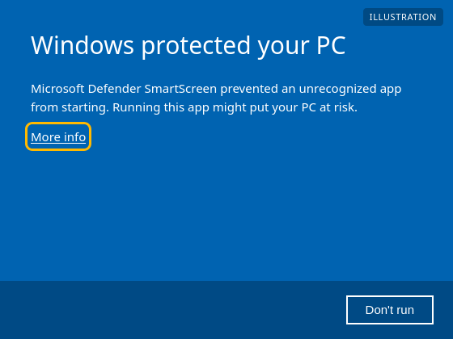
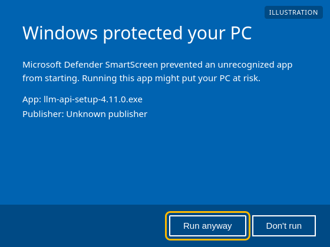
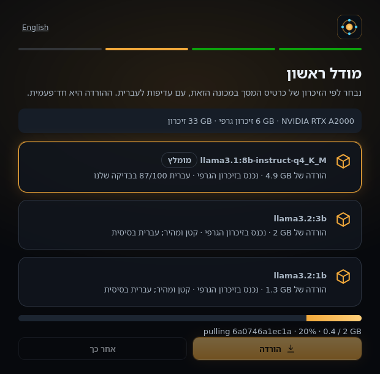
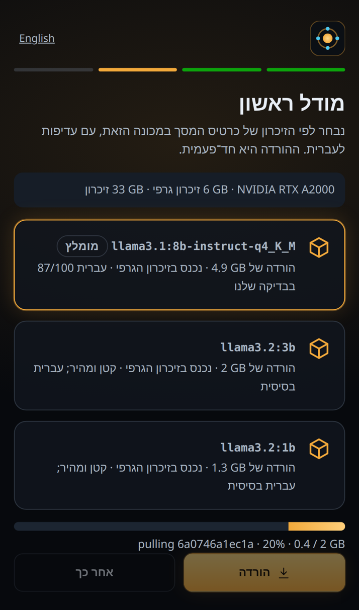

מריצים מודלים מקומית, משתמשים בהם מכל מכשיר עם API תואם OpenAI, ומנהלים הכול מקונסולה בעברית.Run models locally, use them from any device with an OpenAI-compatible API, and manage it all from a console in Hebrew or English.
curl -fsSL https://yaarilevrosen-cpu.github.io/llm-api-releases/install.sh | shקובץ התקנה אחד, כולל פייתון. מתקין גם את Ollama מ־ollama.com.One setup file, Python included. Also installs Ollama from ollama.com.
llm-api-setup-4.12.0.exe (29.4 MB)Ubuntu 22.04, 24.04, Debian 12, Raspberry Pi OS (64 ביט).Ubuntu 22.04 and 24.04, Debian 12, Raspberry Pi OS (64-bit).
curl -fsSL https://yaarilevrosen-cpu.github.io/llm-api-releases/install.sh | shעדיין לא. בינתיים: מתקינים על מחשב אחר ומשתמשים מה־Mac בדפדפן.Not yet. Meanwhile: install on another computer and use it from your Mac in the browser.
קובץ ההתקנה עדיין לא חתום דיגיטלית, ולכן Windows SmartScreen מציג אזהרה על ״מפרסם לא ידוע״ בהפעלה הראשונה. זה צפוי. לפני שממשיכים כדאי לוודא שה־SHA-256 של הקובץ שהורדתם זהה לזה שבטבלה למטה.The setup is not code-signed yet, so Windows SmartScreen shows an “unknown publisher” warning the first time it runs. That is expected. Before you continue, you can check that the file's SHA-256 matches the table below.


איור להמחשה של חלון Windows (המראה המדויק משתנה בין גרסאות).An illustration of the Windows dialog (the exact look varies between versions).
בדיקת ה־SHA-256 ב־PowerShell:Checking the SHA-256 in PowerShell:
Get-FileHash .\llm-api-setup-4.12.0.exeבכניסה הראשונה לקונסולה: בוחרים סיסמה, מכונה אחת או צי, ומודל ראשון שמתאים לכרטיס המסך.The first time you open the console: choose a password, a single machine or a fleet, and a first model that fits your graphics card.


| קובץFile | SHA-256 |
|---|---|
| llm-api-setup-4.12.0.exe 29.4 MB | bbe033a5abd618f240368fdb2f8d4d119dac265f59487fb7daebe7af96237094 |
| llm-api-4.12.0.tar.gz 366 KB | b221324f6588bbca23f792c002cda1a4493dabdb82351984b2299baa2a7cada3 |
| llm-api-4.12.0.zip 389 KB | 8e17ffaaa85bf43735a90594db2559e16b93a3d3a30cc9313729be50fb749a34 |
הקובץ zip הוא אותה תוכנה בלי מתקין (לעדכון ידני). רשימה מלאה:The zip is the same program without an installer (for manual updates). Full list: SHA256SUMS
options in /v1/chat/completions passes Ollama options (num_ctx, num_gpu, seed, ...); a client's own options always win.